Pohon Keputusan (Decision Tree)¶
Definisi¶
Decision tree merupakan suatu metode klasifikasi yang menggunakan struktur pohon, dimana setiap node merepresentasikan atribut dan cabangnya merepresentasikan nilai dari atribut, sedangkan daunnya digunakan untuk merepresentasikan kelas. Node teratas dari decision tree*ini disebut dengan *root.
Data dalam pohon keputusan biasanya dinyatakan dalam bentuk tabel dengan atribut dan record. Atribut menyatakan suatu parameter yang dibuat sebagai kriteria dalam pembentukan tree

Jenis Algoritma Pohon Keputusan¶
-
Categorical Variable Decision Tree (Pohon Keputusan Variabel Kategorikal) merupakan pohon keputusan yang memiliki variabel target kategorik
-
Continuous Variable Decision Tree() merupakan Decision Tree yang memiliki variabel target kontinu
## Algoritma Pohon Keputusan
### ID3
Algoritma inti untuk membangun pohon keputusan disebut ID3. Dikembangkan oleh J. R. Quinlan, algoritma ini menggunakan pencarian top-down, melalui ruang cabang yang mungkin tanpa backtracking. ID3 menggunakan Entropy dan Information Gain untuk membuat keputusan
Entropy¶
Pohon keputusan dibangun dari atas ke bawah dari simpul akar (root node) dan melibatkan mempartisi data menjadi subset yang berisi instance dengan nilai yang sama (homogen). Algoritma ID3 menggunakan entropi untuk menghitung homogenitas sampel. Jika sampel benar-benar homogen, entropinya nol dan jika sampel dibagi rata maka entropinya satu.
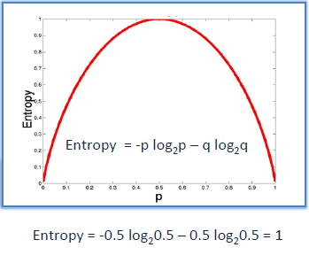
Untuk membangun pohon keputusan, kita perlu menghitung dua jenis entropi menggunakan tabel frekuensi sebagai berikut:
a. Entropy menggunakan tabel frekuensi satu atribut:
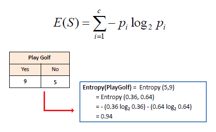
b. Entropi menggunakan tabel frekuensi dua atribut:
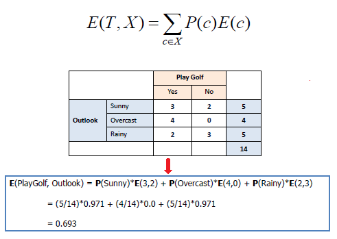
Information Gain¶
Information Gain didasarkan pada penurunan entropi setelah kumpulan data dibagi pada atribut. Membangun pohon keputusan adalah tentang menemukan atribut yang mengembalikan perolehan informasi tertinggi (mis., Cabang yang paling homogen).
Langkah 1: Hitung entropi target.
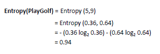
Langkah 2: Kumpulan data kemudian dibagi pada atribut yang berbeda. Entropi untuk setiap cabang dihitung. Kemudian ditambahkan secara proporsional, untuk mendapatkan total entropi untuk pemisahan. Entropi yang dihasilkan dikurangi dari entropi sebelum pemisahan. Hasilnya adalah Information Gain, atau penurunan entropi.
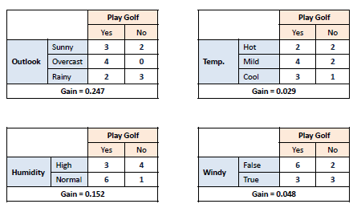
Langkah 3: Pilih atribut dengan perolehan Information Gain terbesar sebagai simpul keputusan (decision node), bagi dataset dengan cabang-cabangnya dan ulangi proses yang sama pada setiap cabang.
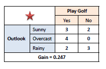
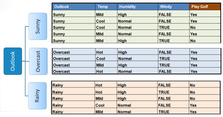
Langkah 4-a: Cabang dengan entropi 0 adalah simpul daun.
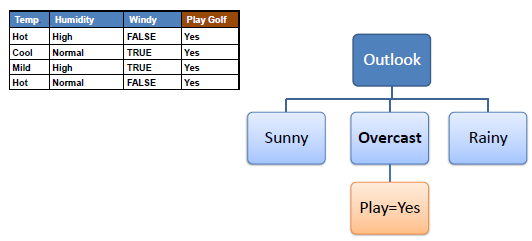
Langkah 4-bb: Cabang dengan entropi lebih dari 0 membutuhkan pemisahan lebih lanjut
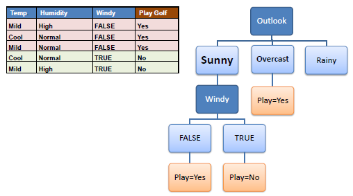
Langkah 5:
Algoritma ID3 dijalankan secara rekursif pada cabang-cabang non-daun, sampai semua data diklasifikasikan.
Gini Index¶
Indeks Gini mengatakan, jika kita memilih dua item dari populasi secara acak maka mereka harus dari kelas yang sama dan probabilitas untuk ini adalah 1 jika populasi murni.
- Ia bekerja dengan variabel target kategori "Sukses" atau "Kegagalan".
- Ini hanya melakukan split Biner
- Semakin tinggi nilai Gini semakin tinggi homogenitasnya.
- CART (Klasifikasi dan Pohon Regresi) menggunakan metode Gini untuk membuat pemisahan biner.
Rumus Gini Index¶
pi adalah probabilitas bahwa sebuah tuple dalam D milik kelas Ci.Weighted Gini untuk Pemisahan:
Langkah-langkah untuk Menghitung Gini untuk pemisahan¶
- Hitung Gini untuk sub-node, menggunakan rumus jumlah kuadrat probabilitas untuk keberhasilan dan kegagalan (p² + q²).
- Hitung Gini untuk split menggunakan skor Gini tertimbang dari setiap node dari split itu
Contoh:
- Mengacu pada contoh di mana kami ingin memisahkan siswa berdasarkan variabel target (playing criket atau tidak). Dalam snapshot di bawah ini, kami membagi populasi menggunakan dua variabel input Gender dan Class. Sekarang, saya ingin mengidentifikasi split mana yang menghasilkan lebih banyak sub-node homogen menggunakan indeks Gini.
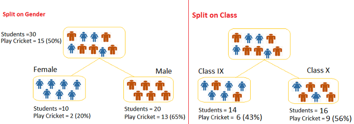
Pemisahan di gender
- Gini untuk sub node Female = (0.43)x(0.43)+(0.57)x(0.57)=0.51
- Gini untuk sub node Male = (0.56)x(0.56)+(0.44)x(0.44)=0.51
- Weighted Gini untuk Pemisahan Gender = (10/30)x0.68+(20/30)x0.55 = 0.59
Pemisahan di class
-
Gini untuk sub node Class IX= (0.2)x(0.2)+(0.8)x(0.8)=0.68
-
Gini untuk sub node Class X= (0.65)x(0.65)+(0.35)x(0.35)=0.55
-
Weighted Gini untuk Pemisahan Class = (14/30)x0.51+(16/30)x0.51 = 0.51
## Kelebihan & Kelemahan
### Kelebihan
- Daerah pengambilan keputusan yang sebelumnya kompleks dan sangat global, dapat diubah menjadi lebih simpel dan spesifik.
- Eliminasi perhitungan-perhitungan yang tidak diperlukan, karena ketika menggunakan metode decision tree maka sample diuji hanya berdasarkan kriteria atau kelas tertentu.
- Fleksibel untuk memilih fitur dari internal node yang berbeda, fitur yang terpilih akan membedakan suatu kriteria dibandingkan kriteria yang lain dalam node yang sama. Kefleksibelan metode decision tree ini meningkatkan kualitas keputusan yang dihasilkan jika dibandingkan ketika menggunakan metode penghitungan satu tahap yang lebih konvensional.
- Dalam analisis multivariat, dengan kriteria dan kelas yang jumlahnya sangat banyak, seorang penguji biasanya perlu untuk mengestimasikan baik itu distribusi dimensi tinggi ataupun parameter tertentu dari distribusi kelas tersebut. Metode decision tree dapat menghindari munculnya permasalahan ini dengan menggunakan criteria yang jumlahnya lebih sedikit pada setiap node internal tanpa banyak mengurangi kualitas keputusan yang dihasilkan.
Kekurangan¶
- Terjadi overlap terutama ketika kelas-kelas dan criteria yang digunakan jumlahnya sangat banyak. Hal tersebut juga dapat menyebabkan meningkatnya waktu pengambilan keputusan dan jumlah memori yang diperlukan.
- Pengakumulasian jumlah eror dari setiap tingkat dalam sebuah decision tree yang besar.
- Kesulitan dalam mendesain decision tree yang optimal.
- Hasil kualitas keputusan yang didapatkan dari metode decision tree sangat tergantung pada bagaimana pohon tersebut didesain.
Implementasi¶
studi kasus kali ini, saya akan menggunakan dataset user modeling. Import Library
import pandas as pd from sklearn.tree import DecisionTreeClassifier from sklearn import model_selection from sklearn import metrics from sklearn.model_selection import train_test_split from sklearn.tree import export_graphviz from sklearn.externals.six import StringIO import pydotplus from IPython.display import Image
Mengimport dataset yang akan di buat menjadi pohon keputusan
#memuat file excel df=pd.read_csv('Iris.csv') #menampilkan data print("Informasi Data\n") print("Jumlah Data : ", len(df)) print ("Dimensi Data : ",df.shape) print ("Dataset :") print(df.head()) print('\n')
Output :
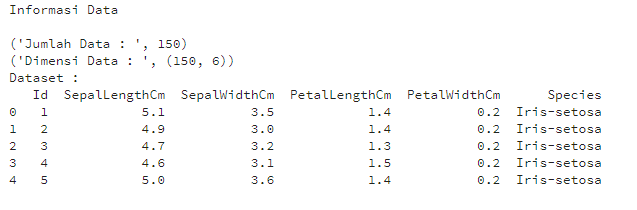
Menampilkan 5 Data teratas
Menampilkan jumlah masing-masing diagnosis dan kolom diagnosis digunakan sebagai class nantinya.
#10 baris pertama df.head(10)
Output :
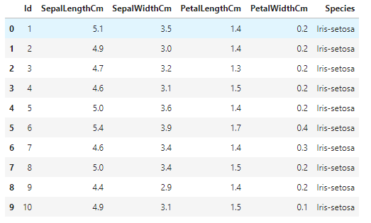
#splitting dataset ke training dan testing train, test = train_test_split(df, test_size = 0.1,random_state=1234) #mencari hasil print(train.shape) print(test.shape)
Output :
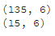
# Dataset validasi dataset array = df.values X = array[:,1:5] Y = array[:,5] # Sepertiga data sebagai bagian dari set tes validation_size = 15 seed = 7 X_train, X_validation, Y_train, Y_validation = model_selection.train_test_split(X, Y, test_size=validation_size, random_state=seed)
#mencari hasil print(X_train.shape) print(Y_train.shape) print(X_validation.shape) print(Y_validation.shape)
Output :
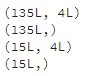
entropy= DecisionTreeClassifier(criterion="entropy",random_state=1234) #learning entropy.fit(X_train,Y_train) #Prediksi prediction=entropy.predict(X_validation) #mengevaluasi(Accuracy) print("Accuracy:",metrics.accuracy_score(prediction,Y_validation)) #evaluation(Confusion Metrix) print("Confusion Metrix:\n",metrics.confusion_matrix(prediction,Y_validation))
Output :
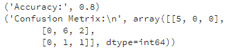
Visualisasi Decision Tree
feature_cols=['SepalLengthCm','SepalWidthCm','PetalLengthCm','PetalWidthCm'] dot_data = StringIO() export_graphviz(entropy, out_file=dot_data, filled=True, rounded=True, special_characters=True,feature_names = feature_cols,class_names=['Iris-setosa','Iris-versicolor','Iris-virginica']) graph = pydotplus.graph_from_dot_data(dot_data.getvalue()) graph.write_png('entropy.png') Image(graph.create_png())
Output :
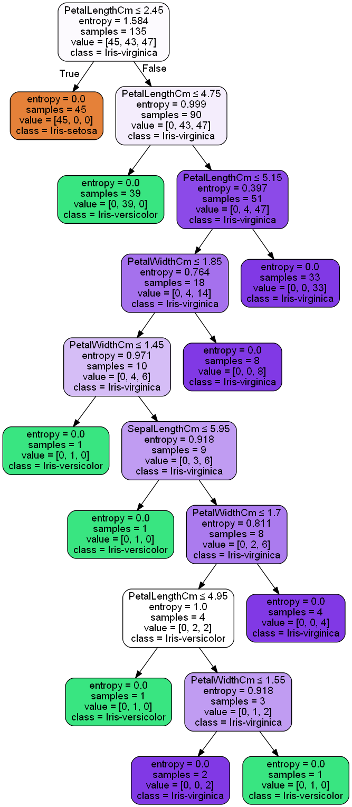
print("Hasil prediksi menngunakan entropy") #Membentuk kembali diperlukan untuk melakukan penggabungan pred_clf_df = pd.DataFrame(prediction.reshape(15,1)) #Ganti nama kolom untuk menunjukkan prediksi pred_clf_df.rename(columns={0:'Prediction'}, inplace=True) #membentuk kembali dataset uji X_validation_df = pd.DataFrame(X_validation.reshape(15 ,4)) #menggabungkan dua bingkai data panda di atas kolom untuk membuat dataset prediksi pred_outcome = pd.concat([X_validation_df, pred_clf_df], axis=1, join_axes=[X_validation_df.index]) pred_outcome.rename(columns = {0:'SepalLengthCm',1:'SepalWidthCm',2:'Number_of_Warts' ,3:'PetalLengthCm' ,4: 'Area'}, inplace=True) #cetak 10 baris prediksi akhir print((pred_outcome).head(15)) print ("\n") #mengevaluasi(Accuracy) print("Accuracy:",metrics.accuracy_score(prediction,Y_validation))
Output :
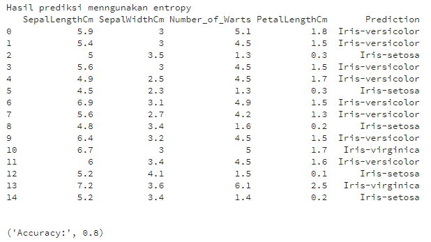
gini= DecisionTreeClassifier(criterion="gini",random_state=1234) #learning gini.fit(X_train,Y_train) #Prediksi prediction_gini=gini.predict(X_validation) #mengevaluasi(Accuracy) print("Accuracy:",metrics.accuracy_score(prediction_gini,Y_validation)) #evaluation(Confusion Metrix) print("Confusion Metrix:\n",metrics.confusion_matrix(prediction_gini,Y_validation))
Output :
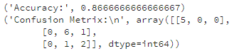
Penederhanaan Decision Tree
feature_cols=['SepalLengthCm','SepalWidthCm','PetalLengthCm','PetalWidthCm'] dot_data = StringIO() export_graphviz(gini, out_file=dot_data, filled=True, rounded=True, special_characters=True,feature_names = feature_cols,class_names=['Iris-setosa','Iris-versicolor','Iris-virginica']) graph = pydotplus.graph_from_dot_data(dot_data.getvalue()) graph.write_png('gini.png') Image(graph.create_png())
Output :
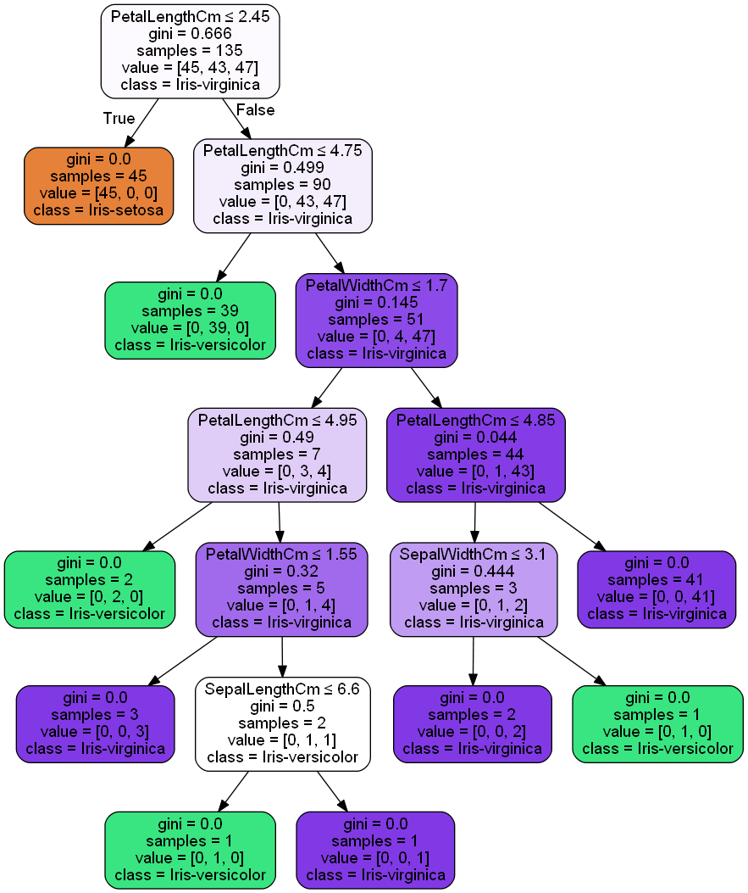
print("Hasil prediksi menngunakan gini") #Membentuk kembali diperlukan untuk melakukan penggabungan pred_clf_df = pd.DataFrame(prediction.reshape(15,1)) #Ganti nama kolom untuk menunjukkan prediksi pred_clf_df.rename(columns={0:'Prediction'}, inplace=True) #membentuk kembali dataset uji X_validation_df = pd.DataFrame(X_validation.reshape(15 ,4)) #menggabungkan dua bingkai data panda di atas kolom untuk membuat dataset prediksi pred_outcome = pd.concat([X_validation_df, pred_clf_df], axis=1, join_axes=[X_validation_df.index]) pred_outcome.rename(columns = {0:'age',1:'Time',2:'Number_of_Warts' ,3:'Type' ,4: 'Area'}, inplace=True) #cetak 10 baris prediksi akhir print((pred_outcome).head(15)) print ("\n") #mengevaluasi(Accuracy) print("Accuracy:",metrics.accuracy_score(prediction_gini,Y_validation))
Output :
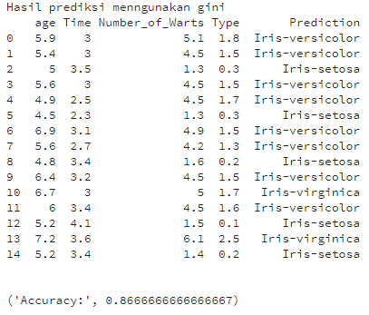